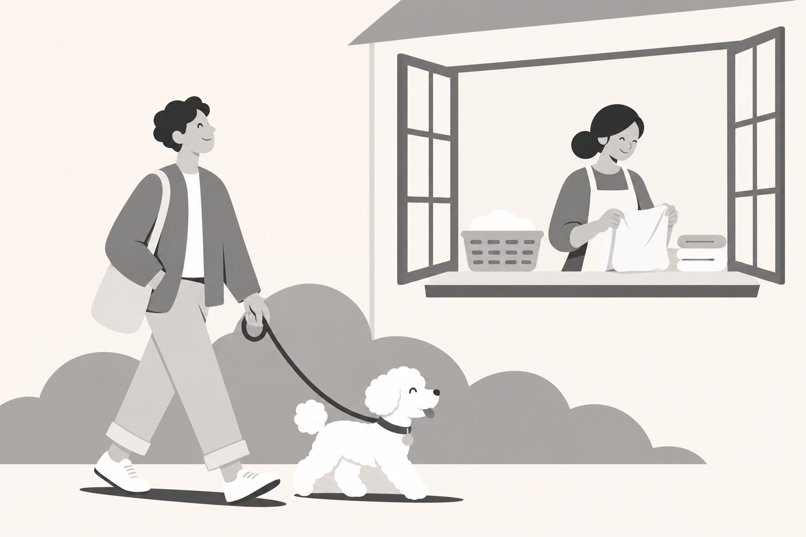
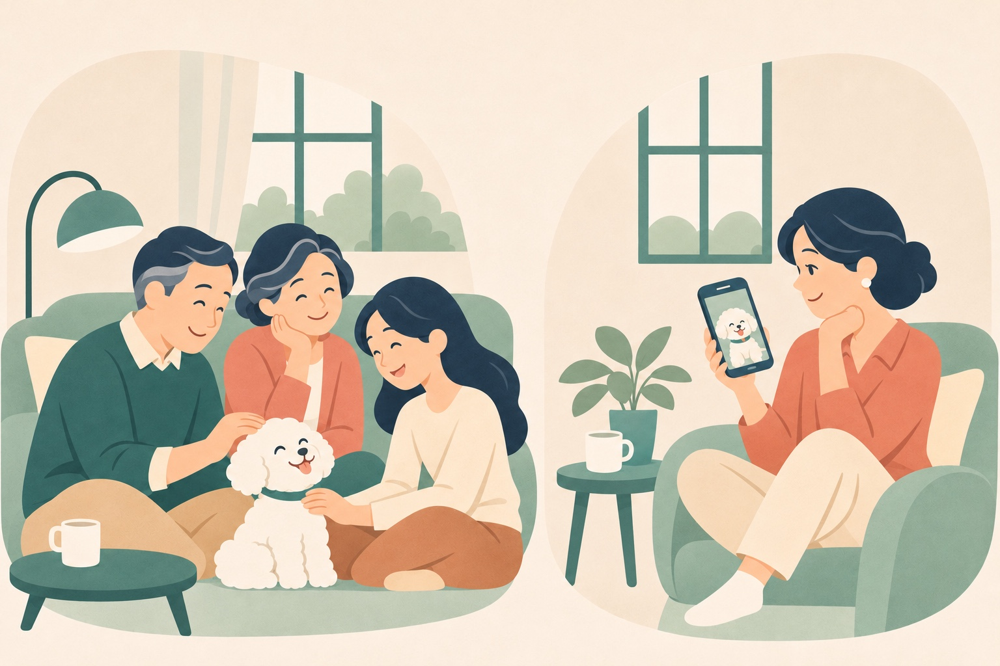
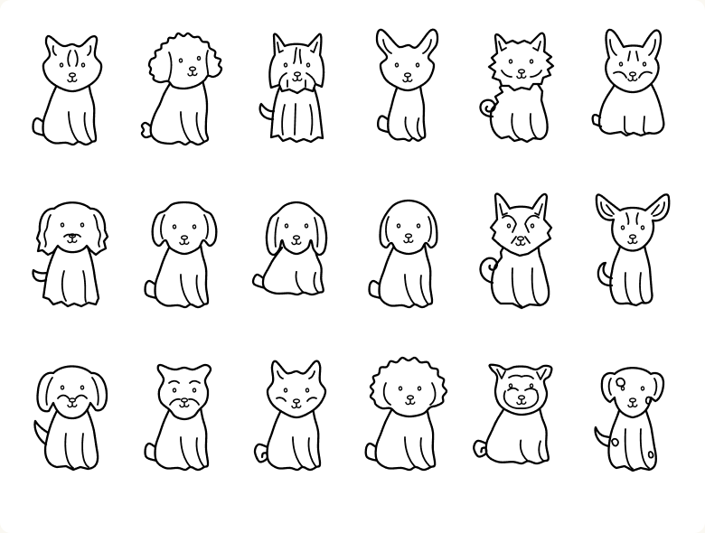

Personal project · iOS · UX / UI
Mongram
散歩のひとときを、
家族にも。
散歩の記録を、家族があとからたどれるiOSアプリ。
Personal project · TestFlight

ROLE
企画・情報設計・UIデザイン
GPT / Codexと実装
CODE
Swift · SwiftUI · SwiftData
離れている時間も、家族で共有
私が散歩する間、妻は家事をしている。その経験から、別々に過ごす家族と愛犬の一日を共有するアプリを考えました。


近所の夫婦の散歩も観察。ただし、別々に歩く理由は聞いておらず、共有の必要性は仮説です。
散歩を、ルートと写真で振り返る
距離や時間だけでなく、ルートと写真を時系列で再生。家族がその日の散歩をたどれるようにしました。
- 散歩を記録
- 写真を残す
- 家族が再生


ホームは、散歩に集中
予定・フィラリア予防薬などを並べた初期案から、散歩の開始と記録を中心にしたホームへ。
ホーム
予定
予防薬
カレンダー
散歩
開く楽しさを、キャラクターで
18犬種のキャラクターと動きで、記録以外にも開く楽しさを。再訪への効果は未検証です。

散歩中の確認と、アプリへの復帰
ランニングアプリを参考に、時間・距離をひと目で確認。Live Activityからアプリへ戻りやすくしました。

これから確かめること
プロトタイプを制作し、自分で動作を確認。外部ユーザーテストはこれからです。
家族に一日が伝わるか
また開きたくなるか
画面：2026.11.05 シミュレーターデモ（架空データ・一部生成写真）